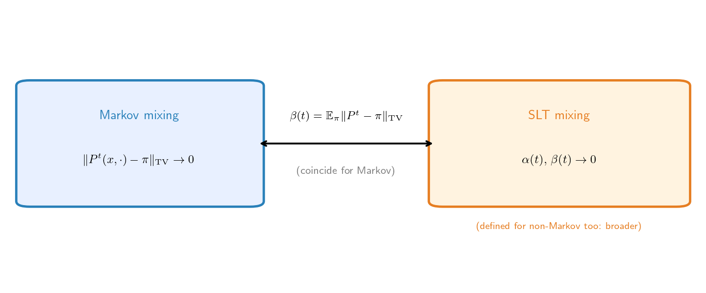

연구 ▷ HST ▷ 두 가지 믹싱 — Markov mixing vs SLT mixing
한 줄: 같은 현상(의존성 소멸)의 두 형식화 — Markov chain에선 수치까지 일치하지만, SLT 쪽이 더 일반이다.
H. “믹싱”이 두 가지야? Markov 책이랑 SLT(Stochastic Limit Theory) 책에 나오는 게 다른 거야?
G. 정의 형식은 다르다. 둘을 나란히 보자.
Markov chain mixing (Levin–Peres–Wilmer, Meyn–Tweedie): 커널이 정상분포로 수렴.
\[\|P^t(x,\cdot) - \pi\|_{\rm TV} \;\to\; 0 \quad (t\to\infty).\]
“한 체인이 어디서 출발했는지 잊는다.”
SLT mixing (Davidson): mixing coefficient — 시간 떨어진 사건들의 점근적 독립성. 예를 들어 \(\alpha\)-mixing 계수
\[\alpha(t) = \sup_{A\in\sigma(\text{past}),\, B\in\sigma(t\text{-future})} \bigl|\mathbb{P}(A\cap B) - \mathbb{P}(A)\mathbb{P}(B)\bigr| \;\to\; 0.\]
“과거 \(\sigma\)-대수와 미래 \(\sigma\)-대수가 풀린다(decouple).”
H. \(\alpha\)-mixing 말고도 mixing 계수가 더 있다던데?
G. 셋이 표준이다 — \(\alpha, \beta, \varphi\). 과거 \(\mathcal{P}_k = \sigma(X_t : t\leq k)\)와 \(t\)-미래 \(\mathcal{F}_{k+t} = \sigma(X_s : s\geq k+t)\)의 의존성을 재는 세기 다른 척도다 (모두 \(t\to\infty\)에 0이면 mixing).
\(\alpha\)-mixing (strong mixing) — 가장 약함. 과거·미래 사건의 독립으로부터의 최대 어긋남:
\[\alpha(t) = \sup_{A\in\mathcal{P}_k,\, B\in\mathcal{F}_{k+t}} \bigl|\mathbb{P}(A\cap B) - \mathbb{P}(A)\mathbb{P}(B)\bigr|.\]
\(\beta\)-mixing (absolute regularity) — 중간. 미래의 조건부 분포가 무조건 분포로 가는 정도를 과거에 대해 평균낸 TV 거리:
\[\beta(t) = \mathbb{E}\Bigl[\bigl\|\mathbb{P}(\mathcal{F}_{k+t}\in\cdot \mid \mathcal{P}_k) - \mathbb{P}(\mathcal{F}_{k+t}\in\cdot)\bigr\|_{\rm TV}\Bigr].\]
\(\varphi\)-mixing (uniform mixing) — 가장 강함. 어떤 과거 사건으로 조건화해도 미래 확률이 균일하게 수렴:
\[\varphi(t) = \sup_{A\in\mathcal{P}_k,\, \mathbb{P}(A)>0,\; B\in\mathcal{F}_{k+t}} \bigl|\mathbb{P}(B\mid A) - \mathbb{P}(B)\bigr|.\]
세기 순서:
\[\varphi\text{-mixing} \;\Longrightarrow\; \beta\text{-mixing} \;\Longrightarrow\; \alpha\text{-mixing}.\]
| 계수 | 재는 것 | 세기 |
|---|---|---|
| \(\alpha\) (strong) | 과거·미래 사건의 독립 갭 | 약 |
| \(\beta\) (abs. regularity) | 미래 조건부 분포의 TV 수렴 (평균) | 중 |
| \(\varphi\) (uniform) | 미래 확률의 과거-균일 수렴 | 강 |
\(\alpha\)가 제일 약해 만족하기 쉽고, \(\varphi\)가 제일 강하다.
H. 한쪽은 분포 수렴, 한쪽은 독립성. 완전 다른 거 아냐?
G. 겉보기엔 다른데, stationary Markov chain에선 사실상 같은 양이다. \(\beta\)-mixing 계수가 정확히 평균 TV 거리거든:
\[\beta(t) = \mathbb{E}_\pi\bigl[\|P^t(X_0,\cdot) - \pi\|_{\rm TV}\bigr].\]
그래서
\[\text{geometric ergodicity} \;\Longleftrightarrow\; \text{geometric } \beta\text{-mixing} \;\Longrightarrow\; \text{geometric } \alpha\text{-mixing}.\]
즉 Markov 믹싱(TV 수렴)이 곧 SLT의 \(\beta\)-mixing이고, 그게 \(\alpha\)-mixing을 준다. 같은 현상의 두 언어.
H. 그럼 그냥 같은 거라고 봐도 돼?
G. Markov chain 안에서는 그래도 된다. 하지만 SLT 믹싱이 더 일반이다 — mixing coefficient는 Markov 구조가 없어도 정의되니까.
반례: 비-Markov stationary 수열(예: 무한차수 MA 과정, 어떤 Gaussian 과정)도 \(\alpha\)-mixing일 수 있다. 거기엔 “커널 \(P^t \to \pi\)”가 아예 없다 — Markov 믹싱은 정의 자체가 안 되지만, SLT 믹싱은 \(\sigma\)-대수 의존성만 보니 적용된다.
→ 즉 Markov 믹싱 \(\subset\) SLT 믹싱 (Markov는 특수 경우, 거기선 일치).
H. HST에선 어느 쪽이야?
G. Tier 2 증명은:
\[\text{minorization} + \text{Foster drift} \;\Rightarrow\; \text{geometric ergodicity (Markov 믹싱)}.\]
이게 곧 geometric \(\beta\)-mixing (그리고 \(\beta\Rightarrow\alpha\)이라 \(\alpha\)-mixing)이라, 의존 수열 \(g(S_s) = (h_i - h_j)^2\)의 LLN/CLT를 정당화한다. 다만 논문 Tier 2는 SLT mixing-CLT가 아니라 Meyn–Tweedie positive Harris 에르고딕 정리(LLN)를 직접 써서 \(SD^2/t \to c\)를 얻는다. SLT 믹싱은 같은 현상의 다른 언어 — 직접 인용은 안 하지만 바닥은 동일. (논문이 Davidson SLT를 인용하는 건 Tier 0의 martingale SLLN.)
참고로 \(\varphi\)-mixing은 더 강해서 uniform ergodicity(Doeblin 조건, 전 공간 minorization)가 있어야 나온다. HST의 minorization은 small set \(C_0\) 위에서만 성립하니 \(\beta\)·\(\alpha\)는 주지만 \(\varphi\)는 일반적으로 안 준다.
H. 한 줄 요약.
G. 두 믹싱은 “의존성 소멸”의 다른 형식화 — Markov 믹싱 = \(\|P^t-\pi\|_{\rm TV}\) 수렴, SLT 믹싱 = mixing coefficient(과거·미래 decoupling). stationary Markov chain에선 \(\beta(t) = \mathbb{E}_\pi\|P^t-\pi\|_{\rm TV}\)로 수치 일치(geometric ergodicity = geometric \(\beta\)-mixing)하지만, SLT 믹싱은 비-Markov 수열에도 정의되는 더 일반 개념이다. HST Tier 2는 Meyn–Tweedie 에르고딕 정리로 가되 바닥은 같은 믹싱.